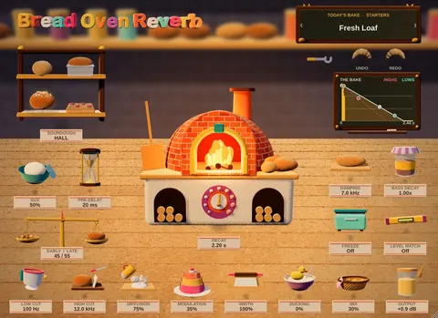

A vocal chain you can cook in five minutes
A good vocal chain is short: clean it, shape it, level it, then give it some space. Here is ours, in the order we use it.
Black Friday: all 16 plugins for $29 with the Full Fridge (was $50), until 1 December. See the deals
Gate first so the noise between lines disappears. EQ next: a little less mud, a little more air. Then compression so every word sits at the same level, and reverb and delay on sends so the vocal stays in front.
For rap vocals, keep the reverb short and lean on the delay. For sung vocals, let the reverb tail duck under the voice so the words stay clear.
What to reach for
- Gummy Gate (gate). Step one. Closes the gaps between lines so headphone bleed and room noise go quiet.
- Spice Shelf EQ (equalizer). Five jars instead of a frequency chart. Lower Creamy for mud, lift Crispy for air, and Tame catches harsh peaks.
- Popcorn Sandwich Compressor (compressor). One dial to level the performance. Smooth Opto is the gentle setting for vocals.
- Bread Oven Reverb (reverb). Plates and rooms with a duck that dips the tail while the singer is singing.
- Spaghetti Delay (delay). Vocal throws with ducking, so the echoes only show up in the gaps.
- Butter Spread (stereo widener). For doubles and backing vocals: wider, and still safe in mono.
- Orange Crusher (distortion). A touch of tube pulp when a vocal needs to cut through a busy beat.
 Gummy GateGate plugin
Gummy GateGate plugin Spice Shelf EQEQ plugin
Spice Shelf EQEQ plugin Popcorn Sandwich CompressorCompressor plugin
Popcorn Sandwich CompressorCompressor plugin
Bread Oven ReverbReverb plugin Spaghetti DelayDelay plugin
Spaghetti DelayDelay plugin Butter SpreadFree stereo widener plugin
Butter SpreadFree stereo widener plugin Orange CrusherDistortion and saturation plugin
Orange CrusherDistortion and saturation plugin
Get all 16 in the Full FridgeTry them free first
Recipes to try
Questions
What order should vocal plugins go in?
Gate, EQ, compressor, then reverb and delay. A little saturation after the compressor helps a vocal cut through. That is Gummy Gate, Spice Shelf EQ, Popcorn Sandwich Compressor, Bread Oven Reverb and Spaghetti Delay.
Are these good for rap vocals?
Yes. Keep the reverb short, use the delay with ducking for throws, and add a little Orange Crusher if the vocal needs bite.
Can I try them before buying?
Yes. Every plugin has a 3-day free trial, and Butter Spread, our stereo widener, comes with a free licence.
Which formats do they come in?
AU, VST3 and AAX on Mac (Apple-notarised installers) and VST3 on Windows 10 and 11.
More menus
Lo-fiDrumsMasteringBeginnersCreative effectsHip hop and trapFL StudioLogic ProAbleton LivePro Tools